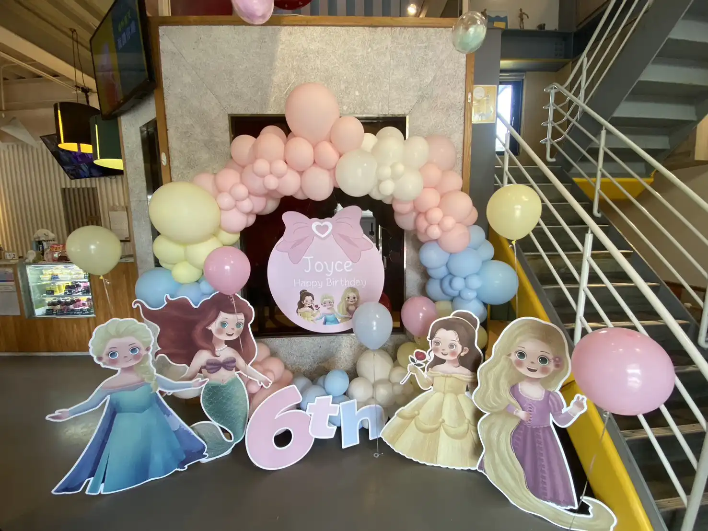
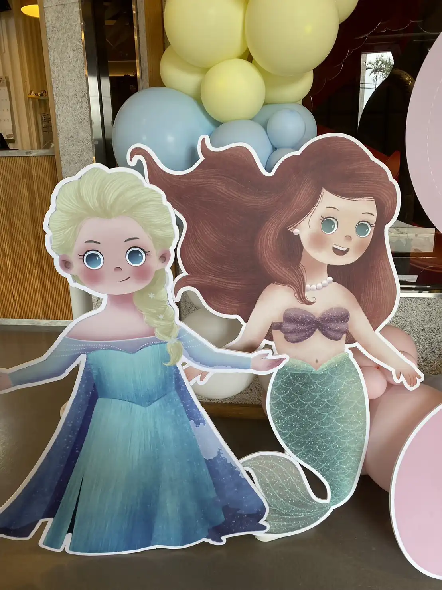
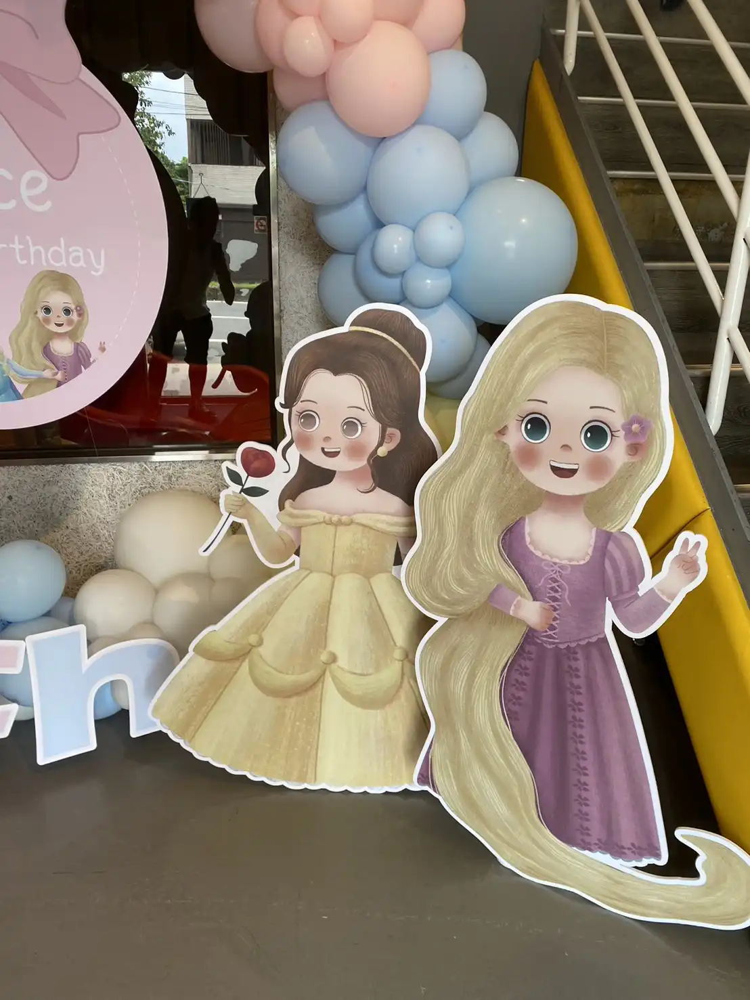

桃園微笑咖啡廳公主主題生日派對｜夢幻與歡樂的一站式服務紀實
夢幻氣球佈置 × 互動魔術秀 × 定點手折造型｜讓每個孩子都身處童話奇蹟中
📍 地點：桃園 微笑咖啡廳 (Smile Cafe 親子餐廳)
桃園親子餐廳包場首選：沉浸式公主派對佈置
在桃園極具人氣的 親子餐廳「微笑咖啡廳」，氣球大叔 Sony 獲邀為 Joyce 打造六歲生日的奇幻現場。本次活動採用包場形式，為了給壽星最極致的驚喜，我們精心規劃了公主主題佈置：從入口處充滿層次感的粉嫩氣球拱門，到內部錯落的小美人魚、艾莎公主、貝兒與長髮公主等精緻主題立牌，成功將空間轉化為夢幻國度。

節目高潮：精彩絕倫的互動氣球魔術表演
佈置是氛圍的起點，而表演則是靈魂所在。氣球大叔 Sony 帶來了高張力的 兒童魔術表演。憑藉深厚的互動功力與幽默口才，Sony 老師邀請現場小朋友擔任魔術助手，讓「氣球變幻」不再只是觀賞，更是一場感官探險。現場歡笑聲與驚嘆聲此起彼落，為 Joyce 的六歲里程碑留下了最燦爛的側寫。


- ✨ 主題化規劃： 根據壽星喜好量身訂製角色佈景。
- 🎩 互動式控場： 專業魔術師帶動氣氛，解決親子活動秩序問題。
- 🎁 滿載而歸： 演出後定點手折精緻氣球作品，滿足每位小賓客的願望。
結語：桃園生日派對與親子活動的創意夥伴
氣球大叔 Sony 致力於將每個家庭的重要時刻「色彩化」。我們在 桃園、中壢、平鎮 擁有豐富的親子餐廳與私人宅邸服務經驗。無論您是想辦一場夢幻的 公主風生日、帥氣的 超人英雄派對，或是 百日宴、週歲抓週，我們都能提供您從佈置到演出的一站式專業解決方案。
💡 關於桃園生日主題佈置與表演的常見問題
- Q: 桃園親子餐廳包場慶生，氣球佈置大約需要多久前進場施工？
- A: 針對桃園微笑咖啡廳這類型的包場活動，氣球大叔 Sony 通常會與餐廳溝通，在活動開始前 1.5 至 2 小時進場佈置。我們的一站式服務包含大型氣球拱門、角色立牌架設以及餐桌點綴，專業的團隊分工確保在賓客抵達前，將現場完美轉換為夢幻的主題派對空間。
- Q: 除了公主主題，慶生派對還可以客製化其他的氣球佈置風格嗎？
- A: 絕對可以！我們擁有豐富的主題設計經驗。除了常見的迪士尼公主風，我們也常為客戶打造超人英雄主題、太空冒險、森林動物或是夢幻獨角獸風格。從背板輸出到異材質氣球的搭配，氣球大叔能根據孩子的喜好與親子餐廳的空間特性，量身打造獨一無二的慶生視覺場景。
- Q: 一站式派對服務中的「魔術表演」與「造型氣球」是如何銜接的？
- A: 我們會規劃最流暢的活動節奏。通常會先由 30 分鐘的高互動兒童魔術秀開場，吸引所有小朋友的注意力並帶動氣氛；表演結束後，緊接著進行 60 分鐘的定點造型氣球發送。這種「先凝聚、後禮贈」的安排，不僅能讓家長安心用餐，也能確保每位小嘉賓都能拿到客製化的氣球禮物回家。
🎈 正在尋找桃園慶生主題佈置與表演嗎？
如果您也希望為您的活動創造像現場一樣爆棚的人氣與驚喜，氣球大叔 Sony 是您的首選！我們專注於提供高品質的互動演出與情境佈置：
- 生日派對規劃：一站式主題佈置、兒童魔術表演、造型氣球手折。
- 親子場域引流：親子餐廳節慶活動、社區晚會、開幕造勢。
- 里程碑儀式：滿月抓週佈置、謝師宴派對、校園慶典演出。
📅 本文整理於 2025 年 07 月 13 日，完整紀錄真實活動現場氛圍。